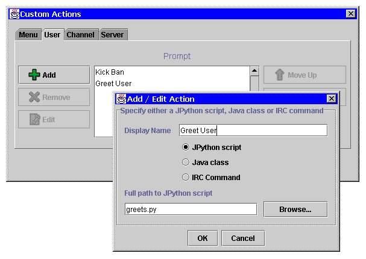

Relay-JFC 0.8.1 - Preview Screenshots |
This screenshot shows the new Custom Actions and Add / Edit Action dialogs that you can use to add new actions to the Relay-JFC menu system. The dialogs show that new JPython actions called "Kick Ban" and "Greet User" have been added to the User menu.

Copyright (c) 2000 David M. Johnson
$Revision: 1.1 $